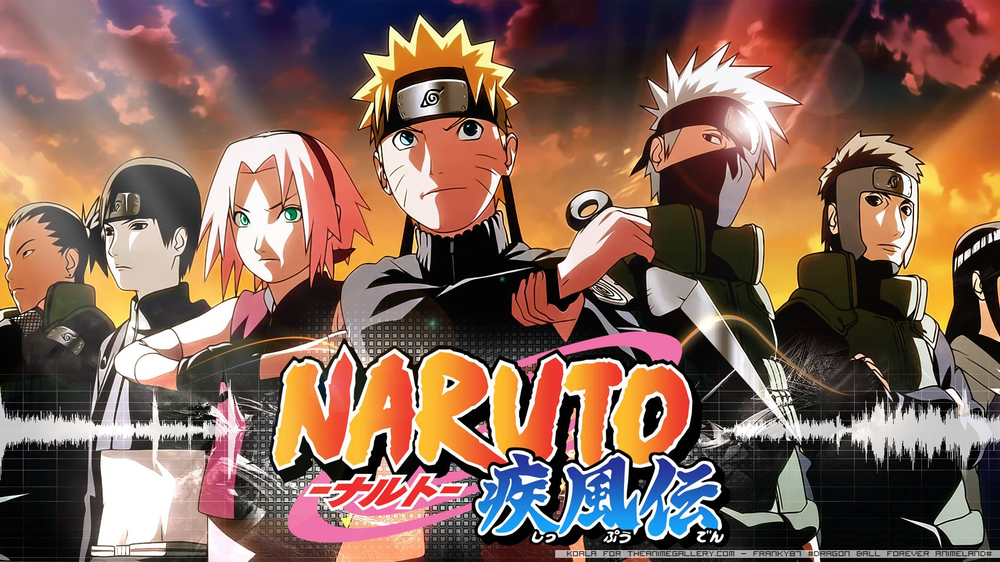

Top 5

One Piece
Gintama is a story of a handyman named Gintoki, a samurai with no respect for rules set by the invaders, who's ready to take any job to survive. He and his gang, however, are also among the very few who have not forgotten the morale of a swordsman. Wherever they go, all they do is to create troubles.
Top 4
Black Clover
The story follows Asta, a young boy born without any magic power. This is unknown to the world he lives in because seemingly everyone has some sort of magic power.
Top 3
Hunter X Hunter
A Hunter is one who travels the world doing all sorts of dangerous tasks. From capturing criminals to searching deep within uncharted lands for any lost treasures. Gon is a young boy whose father disappeared long ago, being a Hunter.
Top 2
Naruto
Naruto (Japanese: NARUTO ナルト ) is a Japanese manga series written and illustrated by Masashi Kishimoto. It tells the story of Naruto Uzumaki, a young ninja who seeks recognition from his peers and dreams of becoming the Hokage, the leader of his village.
Top 1

One Piece
Follows the adventures of Monkey D. Luffy and his pirate crew in order to find the greatest treasure ever left by the legendary Pirate, Gold Roger. The famous mystery treasure named "One Piece".
Top 10
Dragon Ball Z
The epic episodic adventure of Goku and the Z Warriors as they defend the Earth and the Universe from super-powered fighters and monsters. The series is a continuation of the original Dragon Ball, but focuses more on the intense, multi-episode battles that the Z Warriors fight with their foes.
Top 9

The Daily Life Of The Immortal King
Wang Ling is a near-invincible existence with powers far beyond his control. But now that he's sixteen, he faces his greatest battle yet - Senior High School. Wang Ling is a near-invincible existence with powers far beyond his control.
Top 8
Doraemon
Doraemon: A cat-like robot of the 22nd century. Doraemon came to the present age to help Nobita. Doraemon has a four-dimensional pocket which holds a lot of gadgets. He loves Japanese traditional sweet Dorayaki (also called Bean Jam Buns) and suffers from musophobia (fear of mice).
Top 7
Demon Slayer
Demon Slayer: Kimetsu no Yaiba (鬼滅の刃, Kimetsu no Yaiba, "Blade of Demon Destruction") is a Japanese manga series written and illustrated by Koyoharu Gotouge. It follows teenage Tanjiro Kamado, who strives to become a demon slayer after his family was slaughtered and his younger sister Nezuko turned into a demon.
Top 6
Baki The Grappler
The protagonist, Baki Hanma, trains with an intense focus to become strong enough to surpass his father, Yujiro Hanma, the strongest fighter in the world. Five of the world's most violent and brutal death row inmates are gathering to face Baki.